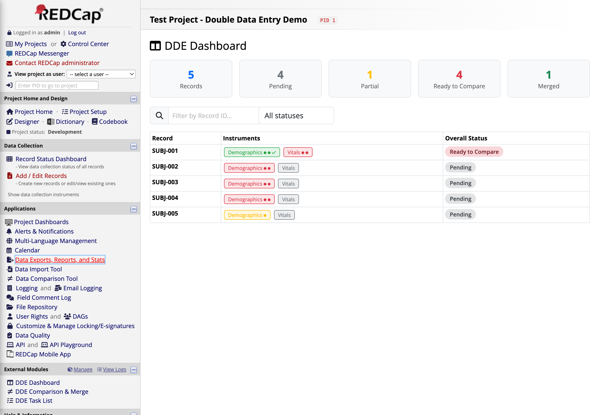
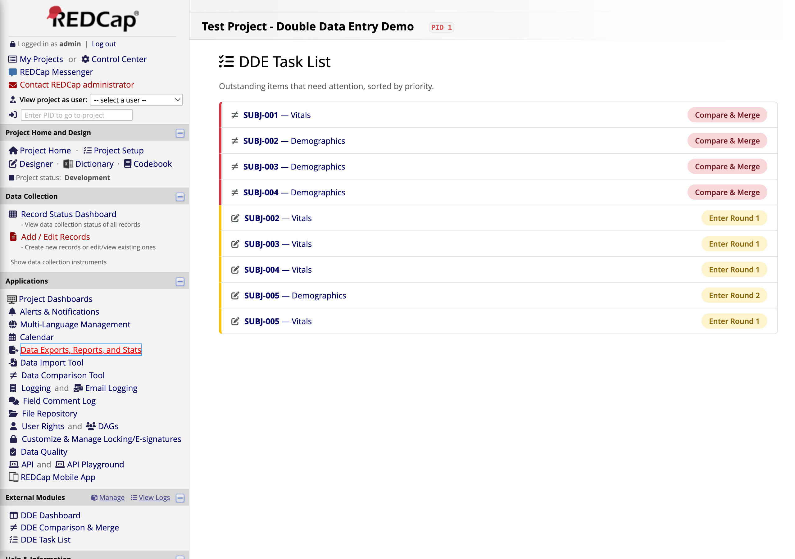
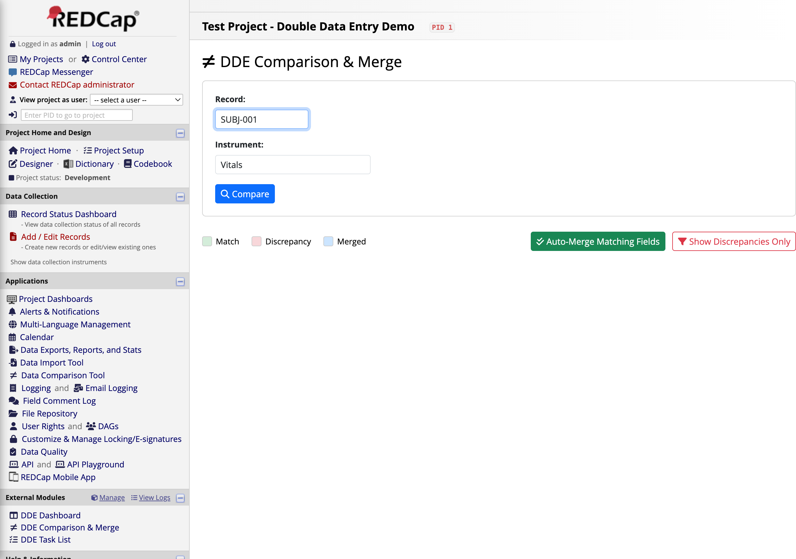
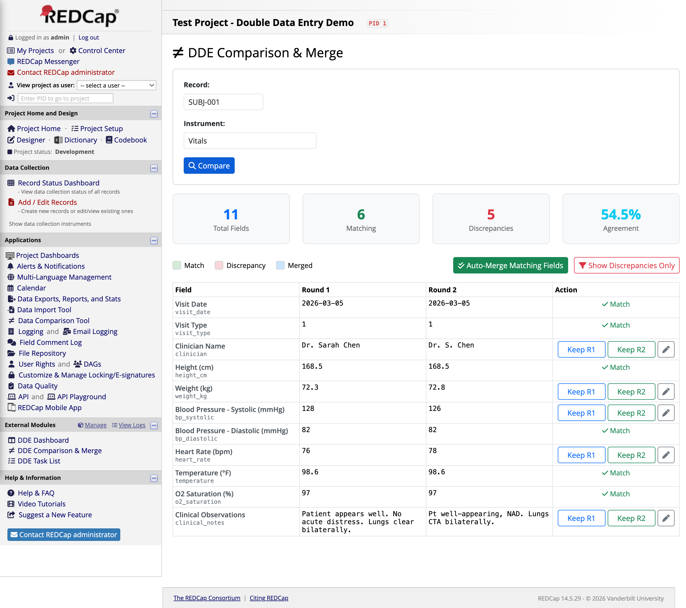
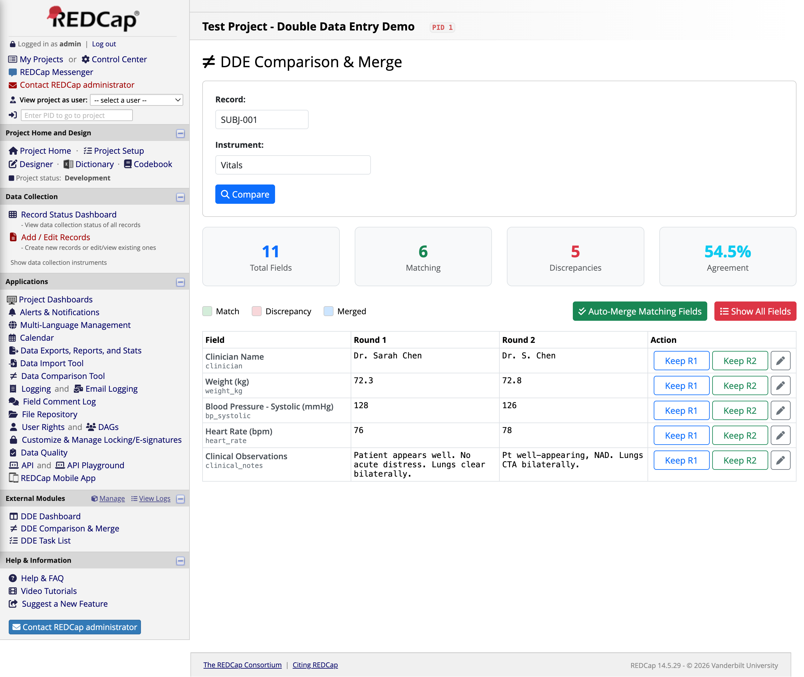
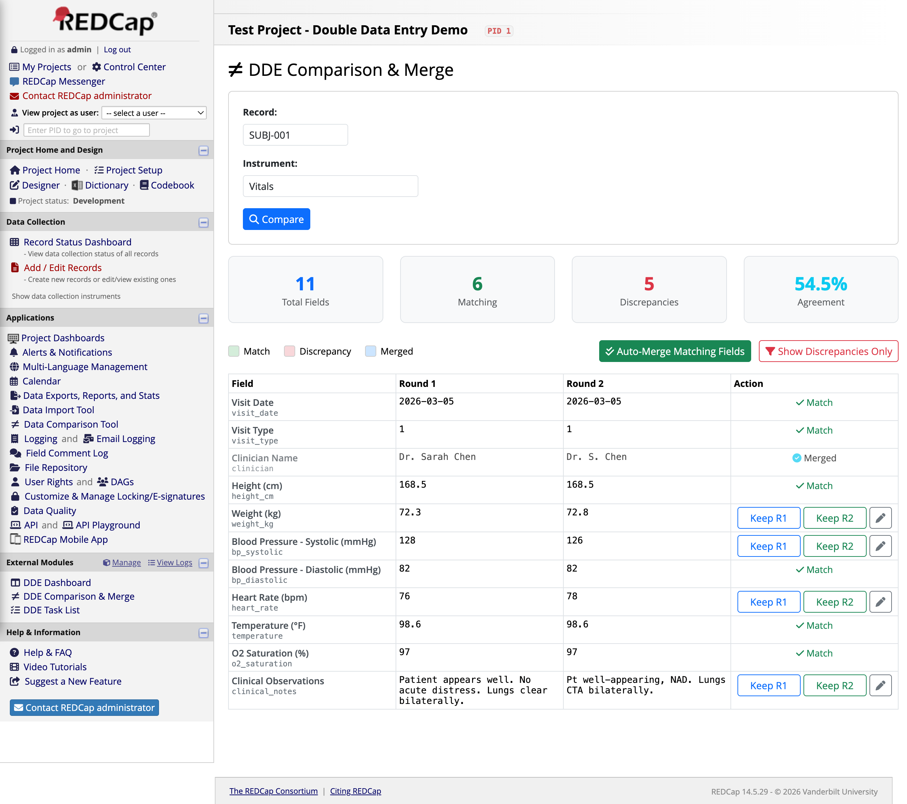
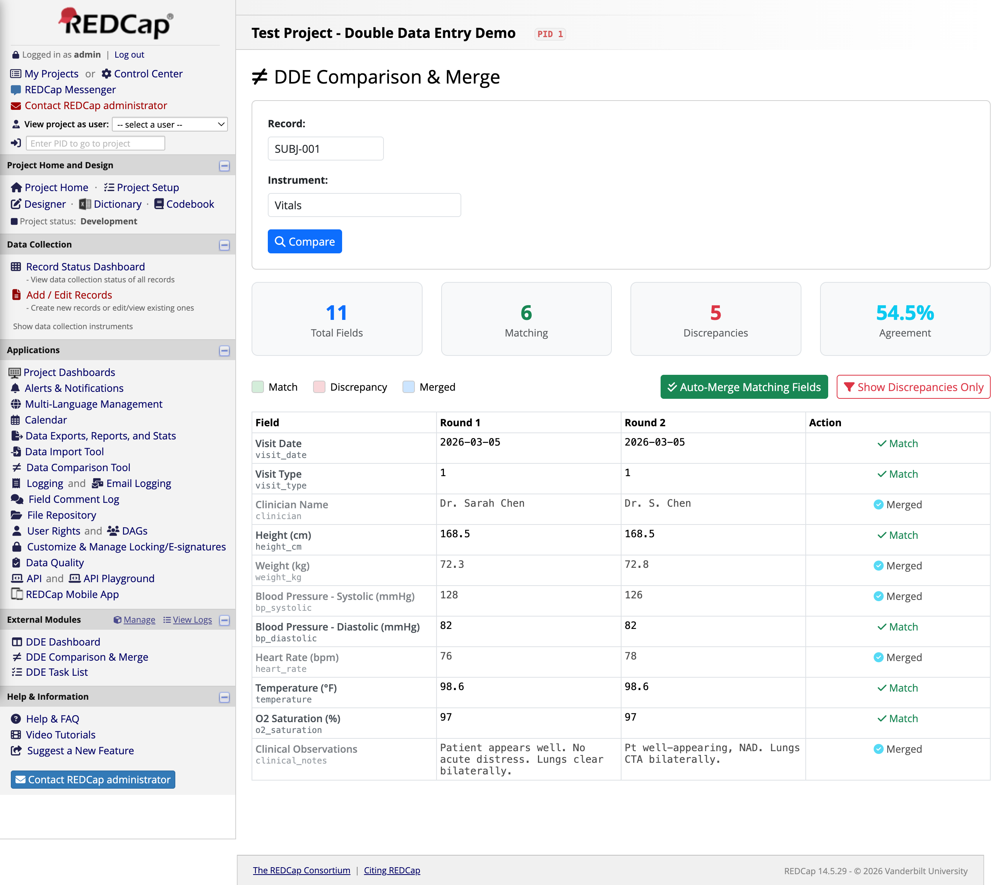
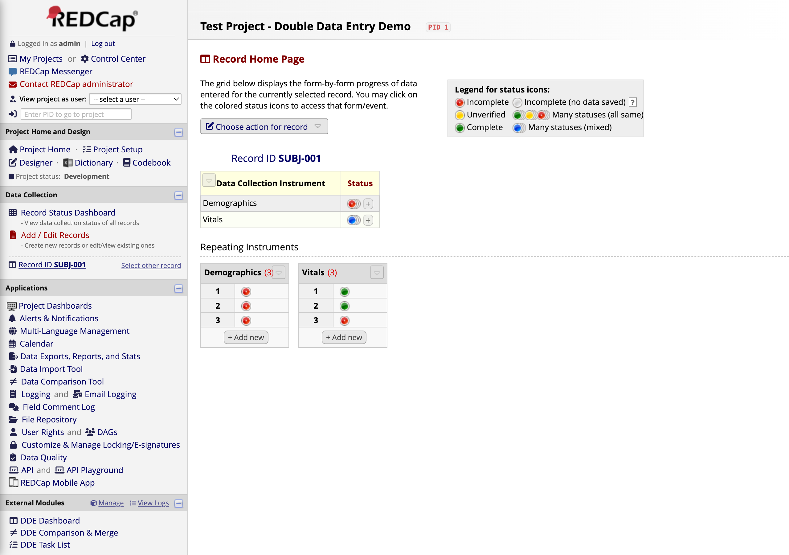
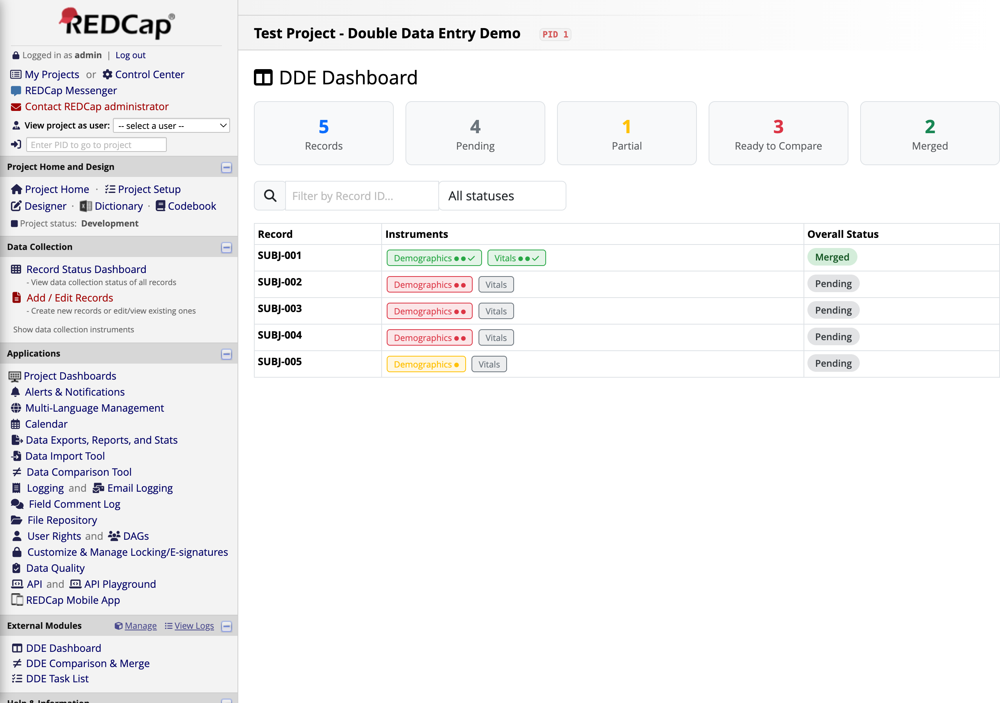

A visual walkthrough of the complete double data entry workflow — from data entry to comparison to merge.
📋
What is Double Data Entry?
Double data entry (DDE) is a data quality technique where two independent operators enter the same source data separately. The entries are then compared field-by-field, discrepancies are flagged, and a reviewer resolves them to produce a single verified record. This module brings that workflow directly into REDCap using repeating instances: Instance 1 = Round 1, Instance 2 = Round 2, Instance 3 = Final merged record.
The Dashboard is your starting point. It shows every record in the project with color-coded instrument badges and an overall status.

At the top, summary cards show the total counts: 5 Records, 4 Pending, 1 Partial, 3 Ready to Compare, and 1 Merged. Each record row shows which instruments have data (green badges = both rounds entered) and the overall DDE status.
Notice SUBJ-001 — both Demographics and Vitals badges are green, and the status says Ready to Compare. This record has both Round 1 and Round 2 data entered and is waiting for comparison.
2
The Task List
The Task List shows actionable items sorted by priority. Tasks that need comparison appear at the top, followed by instruments still waiting for data entry.

The top items (gold badges) are Compare & Merge tasks — these records have both rounds entered and are ready for a reviewer to compare. Below them are Enter Round tasks for records that still need a first or second entry.
Click Compare & Merge next to SUBJ-001 — Vitals to start the comparison.
3
Navigate to Compare & Merge
The Comparison page starts with a simple form: enter the Record ID and select the Instrument you want to compare. Click the blue Compare button to load the side-by-side view.

Tip: When you arrive from the Task List, the Record and Instrument are pre-filled automatically.
4
Side-by-Side Comparison
After clicking Compare, you see every field from the instrument displayed with its Round 1 and Round 2 values side by side. At the top, summary statistics show the comparison at a glance.

For this Vitals form: 11 Total Fields, 6 Matching, 5 Discrepancies, 54.5% Agreement.
Fields are color-coded in the Action column:
Match — Both rounds entered the same value (e.g., Visit Date, Height, Temperature)
Keep R1 / Keep R2 — The values differ and need manual resolution (e.g., Clinician Name: "Dr. Sarah Chen" vs. "Dr. S. Chen")
Real-world discrepancies shown here: Clinician name spelling, weight (72.3 vs 72.8 kg), blood pressure (128 vs 126 mmHg), heart rate (76 vs 78 bpm), and clinical notes wording. These are exactly the types of variations you see in practice.
5
Filter to Discrepancies Only
Click the red Show Discrepancies Only button to hide matching fields and focus on what needs your attention. Only the 5 fields with different values are displayed.

This focused view makes it easy to work through discrepancies one by one, especially on instruments with many fields where most values match.
6
Auto-Merge Matching Fields
Click the green Auto-Merge Matching Fields button to instantly resolve all fields where both rounds agree. This writes the agreed-upon values into Instance 3 (the final merged record) without touching the discrepancies.
Result: "Merged 6 matching field(s). 5 discrepancies remaining." The matching fields (Visit Date, Visit Type, Height, BP Diastolic, Temperature, O2 Saturation) are now locked in. Only the 5 discrepancies need manual review.
7
Resolve a Discrepancy
For each discrepancy, decide which round's value is correct. Click Keep R1 or Keep R2 to accept that value into the merged record. Here we resolved the Clinician Name field by keeping Round 1's value ("Dr. Sarah Chen") — the row turns blue with a Merged indicator.

Each field also has an edit button (pencil icon) that lets you type a custom merged value — useful when neither round is exactly right and you need to enter a corrected value.
Audit trail: If the project setting "Require merge comments" is enabled, you'll be prompted to enter a justification for each resolution. All merge decisions are logged for data quality auditing.
8
All Fields Resolved
After resolving all 5 discrepancies, every field in the instrument shows either Match (auto-merged) or Merged (manually resolved). The merged record is now complete.

The final merged values for SUBJ-001 Vitals are now stored in Instance 3 of the repeating instrument, giving you a clean, verified record alongside both original entries.
9
The Merged Record in REDCap
Back on the REDCap Record Home Page for SUBJ-001, you can see the three vitals instances directly in the Repeating Instruments grid:

Instance 1 (green) — Round 1 entry, unchanged
Instance 2 (green) — Round 2 entry, unchanged
Instance 3 (green) — The final merged, verified record
Both original entries are preserved for audit purposes. The merged Instance 3 contains the reviewed, authoritative values.
10
Final Dashboard — Merge Complete
Returning to the DDE Dashboard, SUBJ-001 now shows a blue Merged status. The Merged counter at the top has incremented, confirming the successful completion of the double data entry workflow for this record.

The remaining records (SUBJ-002 through SUBJ-005) are still in various stages — some awaiting data entry, some ready for comparison — giving you a clear picture of overall project progress.
⚡
Summary
The Easy Double Entry module adds three linked pages to your REDCap project: a Dashboard for project-wide status, a Task List for prioritized action items, and a Compare & Merge page for field-by-field review. Data flows through REDCap's built-in repeating instances — no external databases, no custom record naming schemes. Any instrument can be DDE-enabled through module settings.